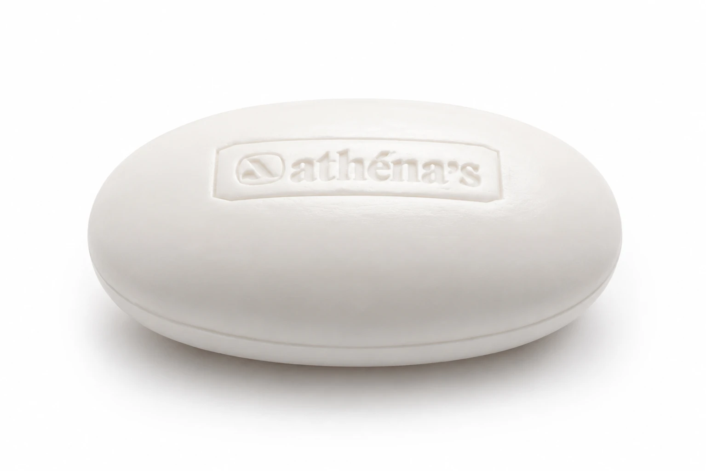
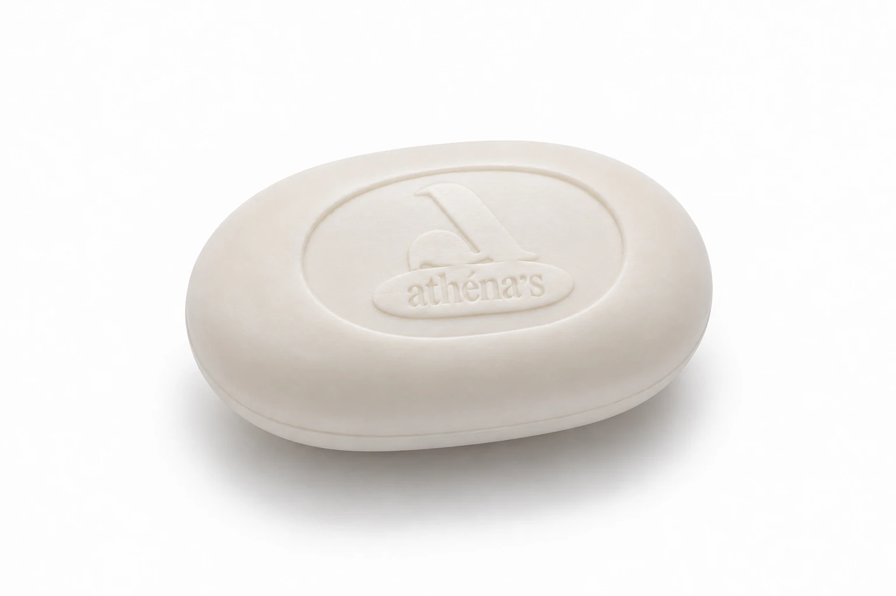
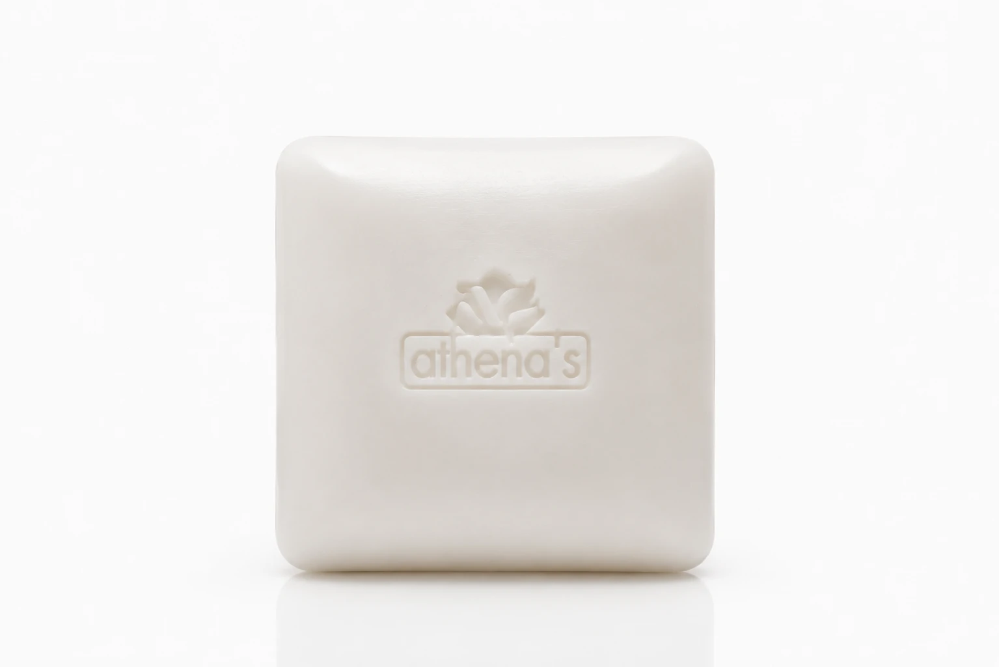
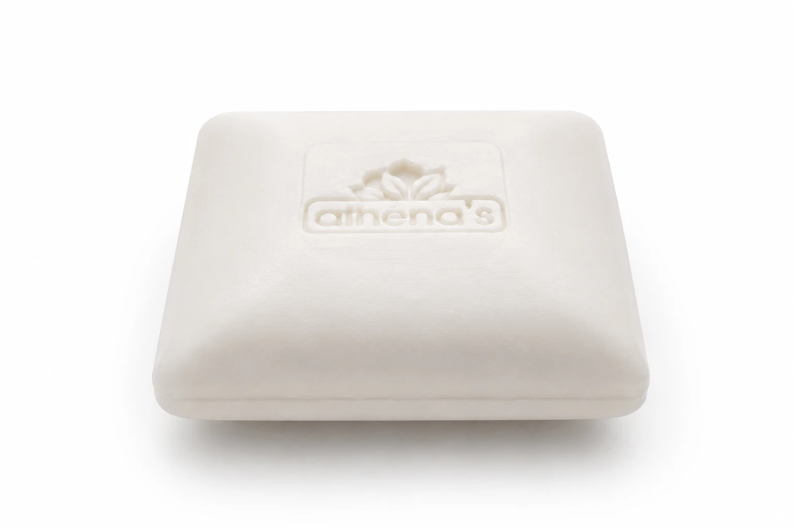
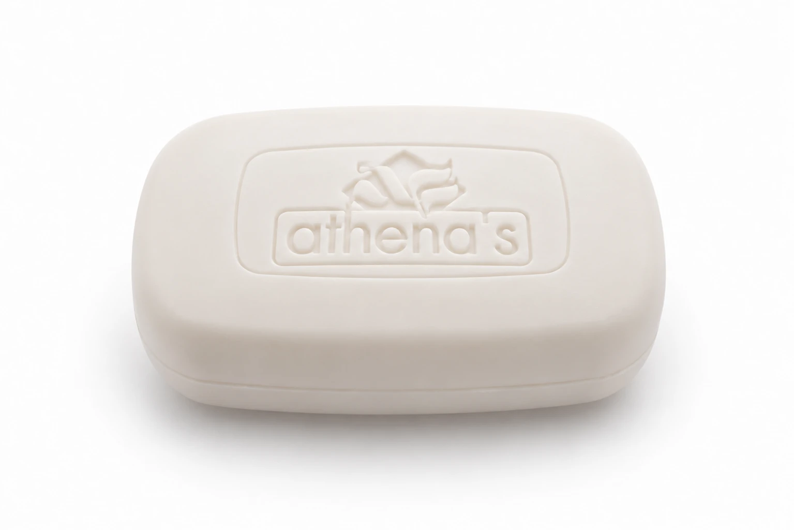

La materia, prima di tutto.
L'essenziale, portato all'estremo.
Nessuna illustrazione, nessun colore: solo un sapone pieno, denso, bianco. Puro nasce dalla stessa cura sulla materia prima che dal 1969 guida ogni formula Athena's, qui portata alla sua forma più essenziale.
Ovale, quadrato o pillow: la stessa formula piena e compatta, dichiarata senza bisogno di decorazione.





Formati, grammature e disponibilità su richiesta: scrivici per scoprire la collezione Puro nel dettaglio.